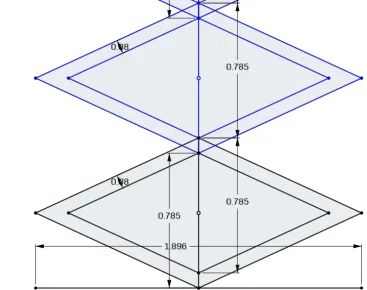
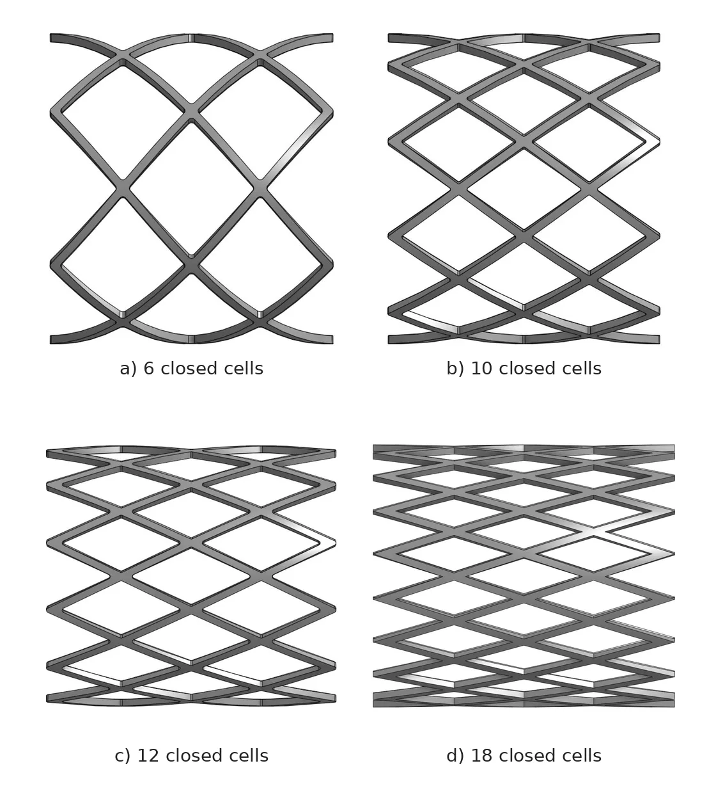
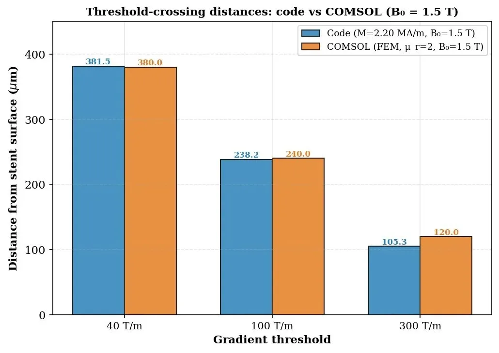
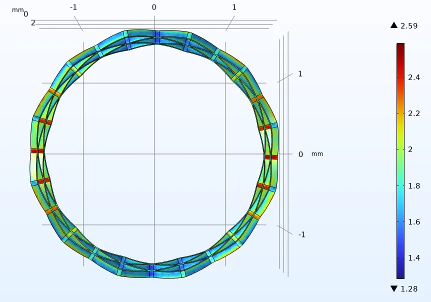
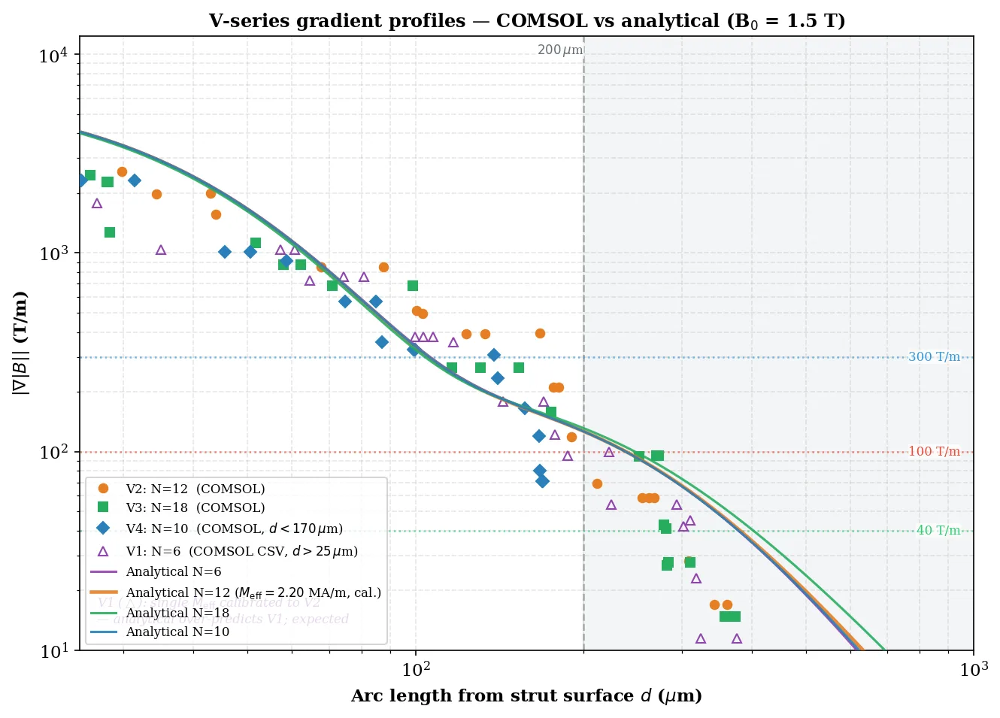
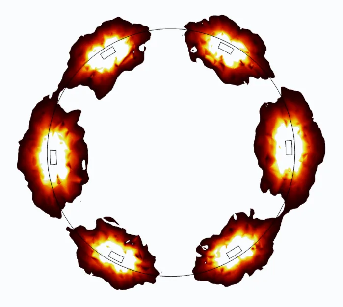
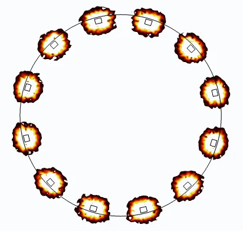

Individual dissertation · MECE10008
A ferromagnetic cerebral stent that holds therapeutic cells in place
Cell therapies for neurological disease often fail because the cells don't reach the target, or don't stay there. I tested whether a stent, magnetised by an MRI scanner's 1.5 T field, could pull iron-oxide-labelled cells out of blood flow and keep them close to the vessel wall.
| Date | Jan–Apr 2026 |
| Supervisor | Alistair Elfick |
| Scope | Self-proposed |
| Tools | COMSOL, Python |
Stem cells and engineered cells can release signals that help repair damaged brain tissue, but the blood–brain barrier and fast arterial flow mean very few injected cells end up where they are needed.
The idea: label the cells with superparamagnetic iron-oxide nanoparticles (SPIONs), put a ferromagnetic stent in the artery feeding the target region, and let the patient's MRI field magnetise it. Steep field gradients next to each strut pull passing cells towards the wall.
I started out looking at whether magnets could push cells through tissue. The literature ruled that out early, so I narrowed the project to one measurable question: how far from the stent can a cell be and still get caught? That distance decides whether captured cells sit close enough for their signals to reach the tissue.
| External field | 1.5 T (clinical MRI) |
| Target vessel | Middle cerebral artery, ~2.7 mm |
| Cell label | SPIONs, 200 pg per cell (reference) |
| Flow speeds | 0.02 to 0.6 m/s mean |
| Geometries | 4 stent designs, 6 to 18 cells |
| Methods | FEA, Akoun–Yonnet analytical field, trajectory ODEs |
I modelled four diamond-cell stents in CAD, keeping strut width and thickness at 80 µm. That's in the range used clinically to avoid disturbing flow. Only the number of cells around the circumference changed.
The geometry has to tile exactly around the tube. Cell width is the circumference divided by the number of columns (W = πD / n), and alternate rings are offset by half a cell axially and circumferentially so the struts interlock. I worked these out by hand before building each version.


I solved the magnetostatics in COMSOL Multiphysics to get the flux density and its gradient around each stent. Fine meshes on 80 µm struts are expensive, so I couldn't run every parameter sweep in COMSOL.
To get around that, I wrote an analytical model in Python based on the Akoun–Yonnet expression for a magnetised rectangular block, treating each strut as a block. It matched COMSOL to within 1% over the region that matters, which let me run large sweeps quickly.
On top of the field model I added a trajectory solver. It follows individual cells through the artery as magnetic force and fluid drag act on them, instead of only comparing the two forces at a single point.


- Capture range of 36–256 µm from the strut surface, depending on flow speed and SPION loading.
- Capture efficiency fell from 100% to 35% as mean flow rose from 0.02 to 0.6 m/s.
- The static test is misleading. The usual |Fmag| > |Fdrag| check underestimates capture by 13.9× because cells drift towards the wall gradually as they travel along the stent.
- Strut count doesn't change reach. The gradient falls off as a power law (exponent about −1.25 to −1.34) whatever the number of struts. Strut geometry and magnetisation set the range; strut count sets how evenly the circumference is covered.



Technical
The biggest finding was about method. At typical post-stenosis conditions (200 pg, 0.2 m/s), the static force balance predicted a capture range of 36 µm, which would have suggested the device can't work. Tracking each cell along its path gave 131 µm. A cell that starts 160 µm away feels only about 50 pN at first, but it drifts inward over the 2 mm approach until the force grows by roughly three orders of magnitude and it gets caught.
On the process
Limited compute pushed me to write my own analytical model. Cross-checking it against FEA taught me more about the physics than either would have alone.
The framework is a feasibility model. I also wrote a risk register covering shear-induced cell detachment and corrosion or leaching of the ferromagnetic material, and set out what would need to be true before experimental testing.
This links directly to cell manufacturing: a delivery device only works if the cells arrive with consistent iron loading and viability. In my model, SPION loading per cell was one of the main factors controlling capture.